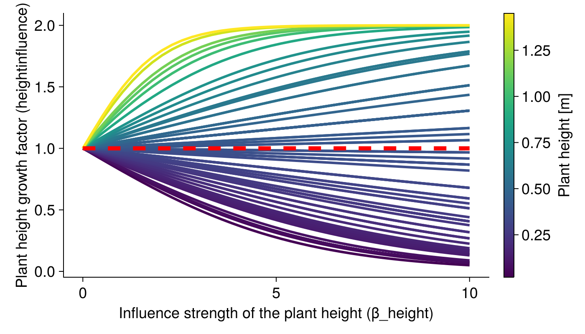
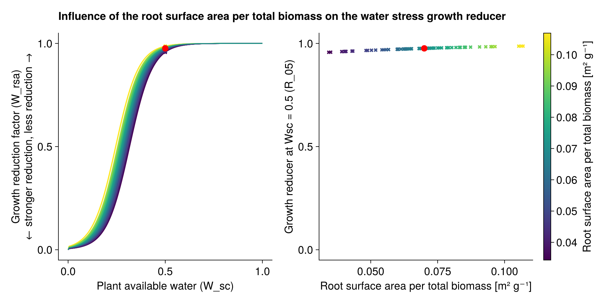
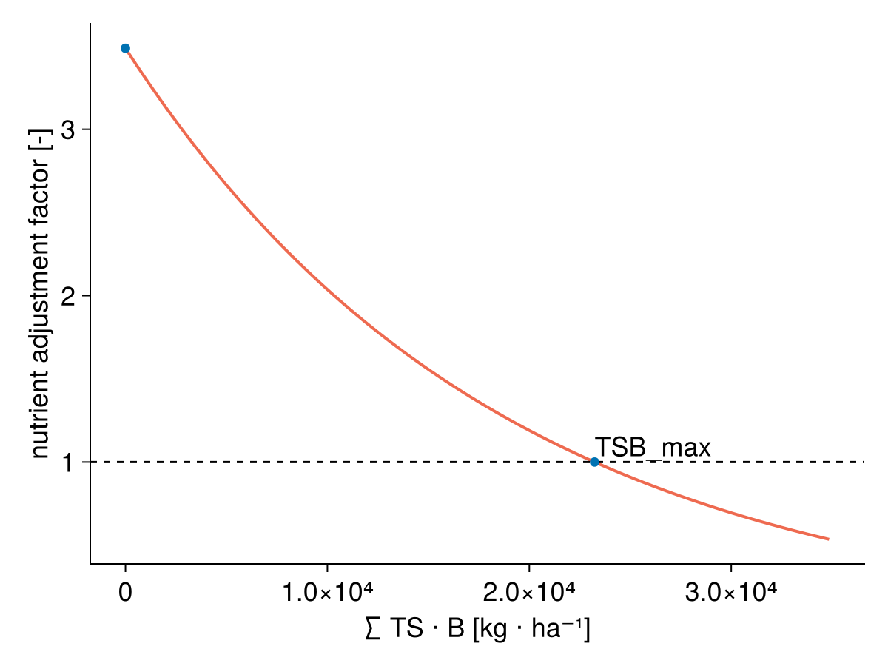
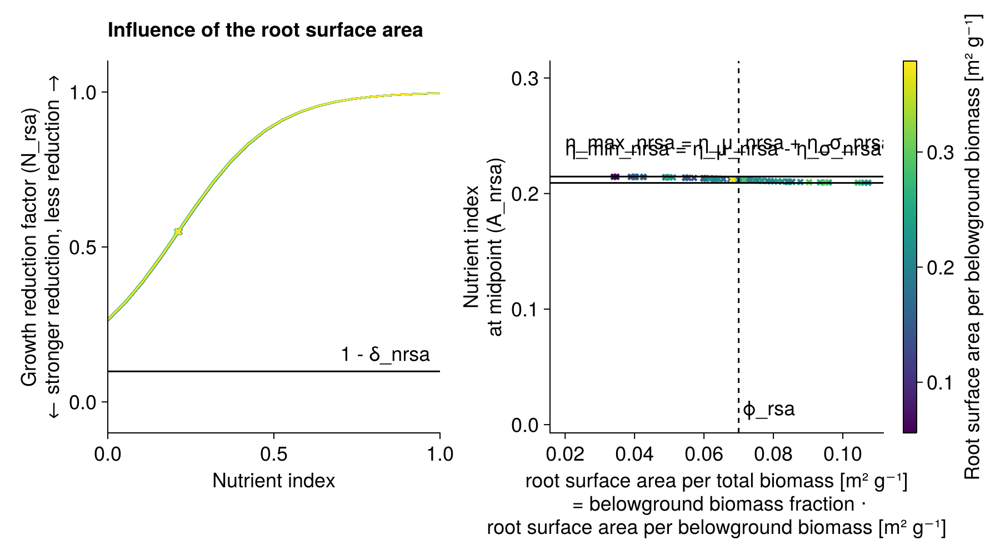
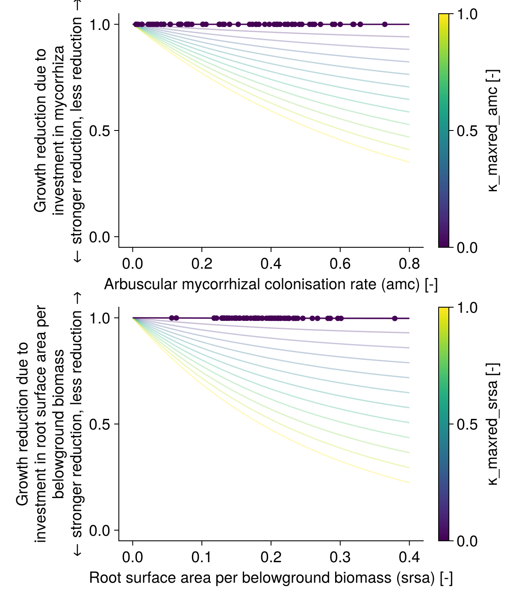

Species-specific growth adjustment
Light competition
GrasslandTraitSim.light_competition! — Functionlight_competition!(
;
container,
above_biomass,
actual_height
)
Calculate the distribution of potential growth to each species based on share of the leaf area index and the height of each species.
\[\begin{align*} LIG_{txys} &= \frac{LAI_{txys}}{LAI_{tot, txy}} \cdot \left(\frac{H_s}{H_{cwm, txy}} \right) ^ {\beta_H} \\ H_{cwm, txy} &= \sum_{s=1}^{S}\frac{B_{txys}}{B_{tot, txy}} \cdot H_s \end{align*}\]
Parameter, see also SimulationParameter:
- $\beta_H$ (
β_height) controls how strongly taller plants gets more light for growth [-]
Variables:
- $LAI_{txys}$ (
LAI) leaf area index of speciessat timetand patchxy[-] - $LAI_{tot, txy}$ (
LAItot) total leaf area index, seecalculate_LAI![-] - $B_{txys}$ (
biomass)biomass of each species [kg ha⁻¹] - $H_s$ (
height) potential plant height [m] - $H_{cwm, txy}$ (
height_cwm) community weighted mean height [m]
Output:
- $LIG_{txys}$ (
light_competition) light competition factor, distributes total potential growth to each species [-]
Taller plants get more light and can therefore growth more than smaller plants. This is modelled by the influence of the potential height in relation to the community weighted mean potential height. The strenght of this relationship is modelled with the parameter $\beta_H$.
The potential height refers to the height that the plant would reach if it would not be limited by other factors.

Water stress
The species differ in their response to water stress by the different trait values of the specific leaf area and the root surface areas per above ground biomass. The values of both response functions are multiplied to get factor that reduces the growth.
It is implemented in water_reduction!.
GrasslandTraitSim.water_reduction! — Functionwater_reduction!(; container, W, PWP, WHC)
Reduction of growth based on the plant available water and the traits specific leaf area and root surface area per belowground biomass.
Reduction of growth due to stronger water stress for plants with lower specific root surface area per above ground biomass (srsa).

Nutrient stress
Nutrient competition factor
GrasslandTraitSim.below_ground_competition! — Functionbelow_ground_competition!(; container, total_biomass)
Models the density-dependent competiton for nutrients between plants.
Plant available nutrients are reduced if a large biomass of plant species with similar root surface area per belowground biomass (srsa) and arbuscular mycorrhizal colonisation (amc) is already present.
We define for $N$ species the trait similarity matrix $TS \in [0,1]^{N \times N}$ with trait similarities between the species $i$ and $j$ ($ts_{i,j}$), where $ts_{i,j} = ts_{j,i}$ and $ts_{i,i} = 1$:
\[TS = \begin{bmatrix} ts_{1,1} & ts_{1,2} & \dots & & ts_{1,N} \\ ts_{2,1} & ts_{2,2} & & \\ \vdots & & \ddots & & \\ ts_{N,1} & & & & ts_{N,N} \\ \end{bmatrix} = \begin{bmatrix} 1 & ts_{1,2} & \dots & & ts_{1,N} \\ ts_{2,1} & 1 & & \\ \vdots & & \ddots & & \\ ts_{N,1} & & & & 1 \\ \end{bmatrix}\]
and the biomass vector $B \in [0\,\text{kg ha⁻¹}, ∞\,\text{kg ha⁻¹}]^N$ with the biomass of each plant species $b$:
\[B = \begin{bmatrix} b_1 \\ b_2 \\ \vdots \\ b_N \\ \end{bmatrix}\]
Then, we multiply the trait similarity matrix $TS$ with the biomass vector $B$:
\[TS \cdot B = \begin{bmatrix} 1 & ts_{1,2} & \dots & & ts_{1,N} \\ ts_{2,1} & 1 & & \\ \vdots & & \ddots & & \\ ts_{N,1} & & & & 1 \\ \end{bmatrix} \cdot \begin{bmatrix} b_1 \\ b_2 \\ \vdots \\ b_N \\ \end{bmatrix} = \begin{bmatrix} 1 \cdot b_1 + ts_{1,2} \cdot b_2 + \dots + ts_{1,N} \cdot b_N \\ ts_{2,1} \cdot b_1 + 1 \cdot b_2 + \dots + ts_{2,N} \cdot b_N \\ \vdots \\ ts_{N,1} \cdot b_1 + ts_{N,2} \cdot b_2 + \dots + 1 \cdot b_N \\ \end{bmatrix}\]
The factors are then calculated as follows:
\[\text{nutrients_adj_factor} = \left(\frac{TS \cdot B}{\text{α_TSB}}\right) ^ {- \text{β_TSB}} \\\]
The reduction factors control the density and increases the "functional dispersion" of the root surface area per belowground biomass and the arbuscular mycorrhizal colonisation.
The TS matrix is computed before the start of the simulation (calculation of trait similarity) and includes the traits arbuscular mycorrhizal colonisation rate (amc) and the root surface area devided by the above ground biomass (srsa).
nutrients_adj_factoris the factor that adjusts the plant available nutrients [-]TSis the trait similarity matrix, $TS \in [0,1]^{N \times N}$ [-]Bis the biomass vector, $B \in [0, ∞]^{N}$ [kg ha⁻¹]β_TSBis the exponent of the below ground competition factor [-]

Growth reduction due to nutrient stress
The species differ in the response to nutrient availability by different proportion of mycorrhizal colonisations and root surface per above ground biomass. The maximum of both response curves is used for the nutrient reduction function. It is assumed that the plants needs either many fine roots per above ground biomass or have a strong symbiosis with mycorrhizal fungi.
It is implemented in nutrient_reduction!.
GrasslandTraitSim.nutrient_reduction! — Functionnutrient_reduction!(; container, nutrients, total_biomass)
Reduction of growth based on plant available nutrients and the traits arbuscular mycorrhizal colonisation and root surface area per belowground biomass.
Reduction of growth due to stronger nutrient stress for lower arbuscular mycorrhizal colonisation (AMC).

Reduction of growth due to stronger nutrient stress for lower specific root surface area per belowground biomass (srsa).

Cost for investment into roots and mycorrhiza
GrasslandTraitSim.root_investment! — Functionroot_investment!(; container)
Investment into root and mycorriza
\[\begin{align} invest &= \exp(\kappa\_{red, amc} \cdot acm) \cdot abp \\ \end{align}\]
